欧游札记之哈布斯堡荣光(Day2布拉格—旧城区—城堡区)
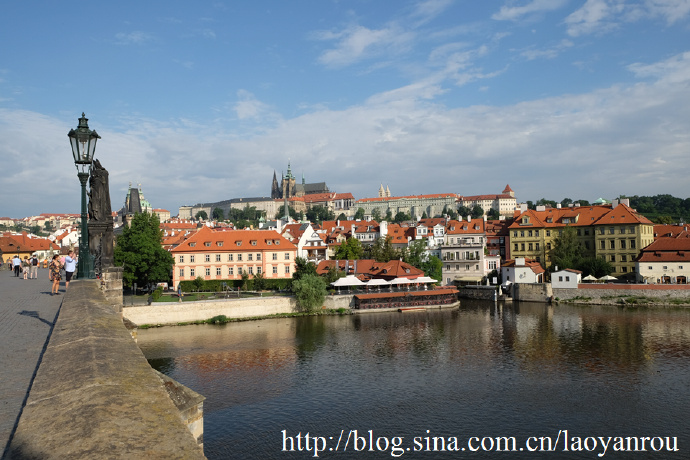
Day2 布拉格—旧城区—城堡区
一觉睡得很香，加上时差原因，我们起了个大早。匆匆在公寓里解决了早餐，我们迎着布拉格清晨的阳光，穿行在行人寥寥的古老街道上，抱着相机奔向布拉格的母亲河—伏尔塔瓦尔河。
可当我们真正看见这条河时心里却泛起一丝失望，河水乌黑，尽管没有散发出污臭味，但感觉和我们印象中欧洲河流普遍清冽见底的预期有很大差距。尽管后来了解到由于伏尔塔瓦尔河底特殊的砂石颜色造成了此条河流的黑色观感，但由于见识了太多臭河涌的尊荣使得心里总难免有些不爽。不过撇开河水本身不说，河两岸的建筑倒是别具一格，文艺复兴风格的鲁道夫音乐厅前竖立着两尊分别弹竖琴和排笛的女神雕像惟妙惟肖，连AMY都难得地表露出合影的兴趣。音乐厅前小广场上安东尼青铜雕像旁也已有中国同胞在闲庭信步了，看来都是早起的鸟儿有食吃啊！
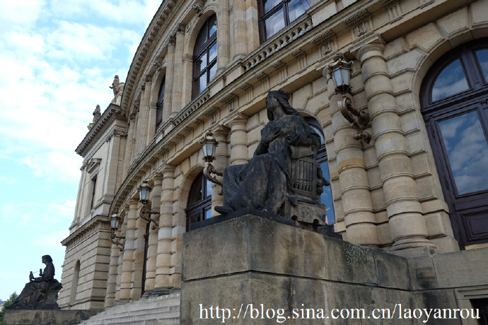
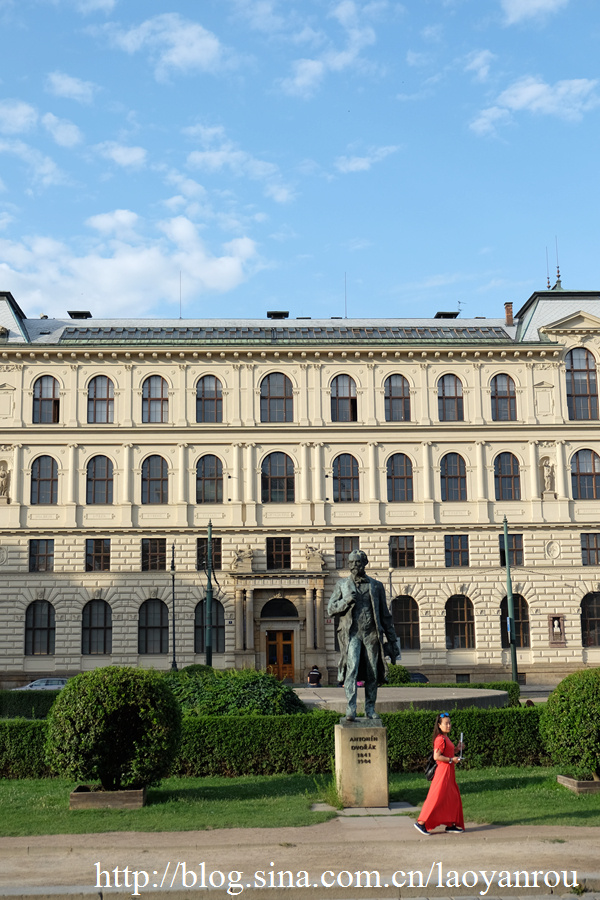
我们顺着音乐厅旁一座不知名的大桥向城堡区方向走去，越接近伏尔塔瓦尔河越发现它其实也没有第一眼看上去那么丑陋，两岸茂密的绿树在黝黑色河面上投下了浓得化不开的墨绿，河边打烊酒吧的小红花静静地吐露着芬芳，河中间几条小舟载着垂钓的人们悠然晃荡，在不远处灰黑色古老的查理大桥和远方城堡区区一色的红瓦白屋及圣维特大教堂高耸的尖顶的映衬下，伏尔塔瓦尔河仿佛一串低调奢华的黑珍珠项链把古老的布拉格装扮得格外雍容华贵。
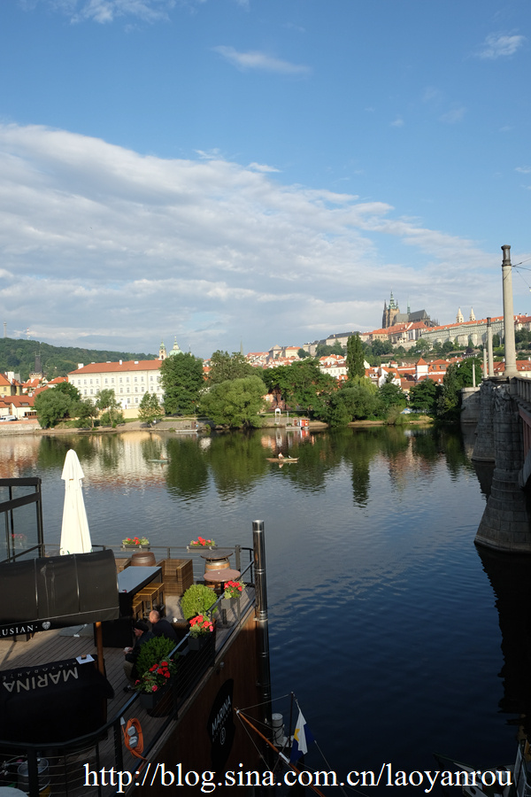
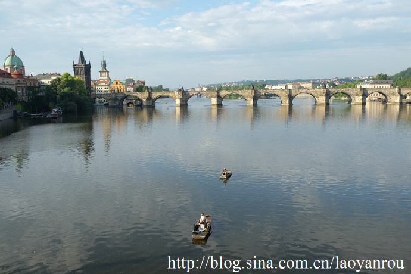
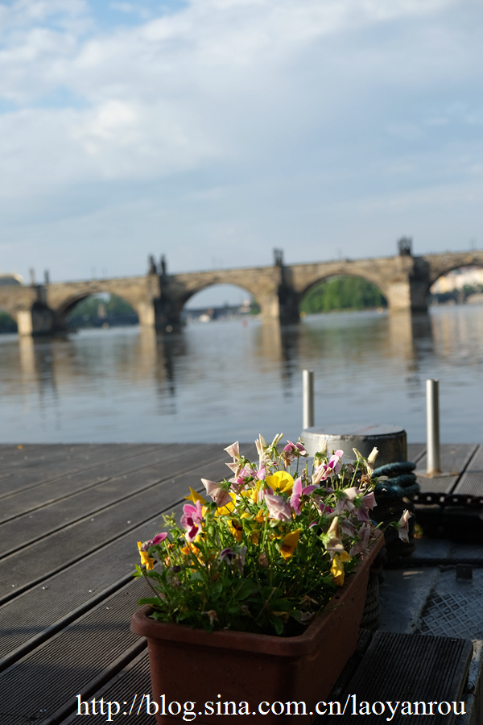
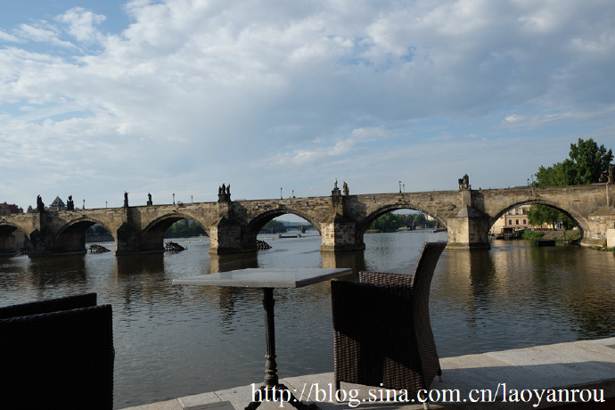
本来只想着跨过桥到城堡区对岸随便走走，不曾想路上偶遇了捷克天才作家弗兰兹.卡夫卡博物馆，AMY顿时眼放出绿光死乞白赖地要进去参观，看在门口的两个旋转撒尿铜人喷泉设计独具匠心的份上，我们咬咬牙便买票进去了。博物馆设计得还蛮有意思的，潜移默化地把卡夫卡的生平、作品、家庭及情感历程通过各种多媒体形式向我们娓娓道来，展示了一位伟大的捷克作家如何在布拉格的犹太区商人家庭受教育成长，长期从事工伤保险理赔工作体验了人情冷暖和人性阴暗，最后完成了包括《变形记》在内的一系列灰色调的针砭时事的世界名著的传奇历程，而他本人也因情感坎坷、多愁善感而郁郁而终。这么多年过去了，人们仍修建博物馆来纪念他的生平和作品，足可见卡夫卡不仅属于布拉格、属于捷克更属于全世界热爱其作品的人们。
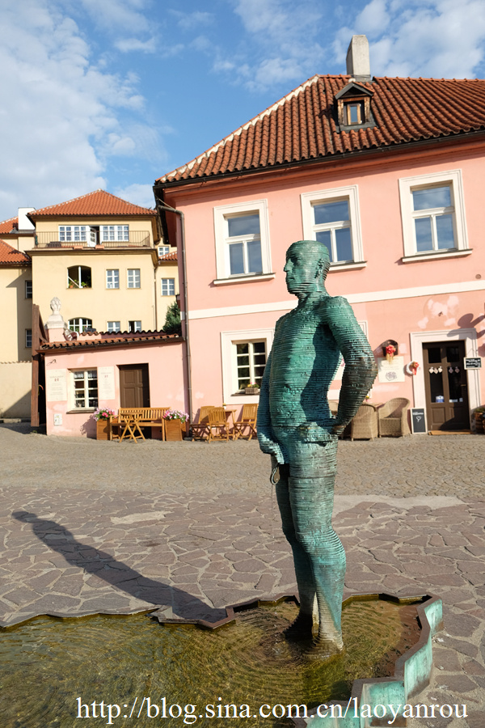
不知不觉在博物馆晃荡了差不多一个小时，走出来时抬头仰望布拉格湛蓝天空便仿若重生般地从抑郁阴沉的卡夫卡一生中抽离了出来。查理大桥桥头的一间卖肉桂卷的小店吸引了AMY的注意，因为她美食攻略里早就把肉桂卷列为此次捷克行的必尝小吃之一了。其实在我看来就是一卷在旋转铁棒上烤得金黄酥脆的面团撒了些独特的肉桂香料和白砂糖而已，但AMY还是直接无视了我们旅游点东西比较贵的忠告，花了差不多两欧整了一条有滋有味地大快朵颐起来。刚开始我们以为她也就是三分钟热度的新鲜劲，没想到随后几天里几乎每到一处有卖肉桂卷的地方都要乖乖地掏腰包买单，不禁令人疑惑果真有这么好吃么？
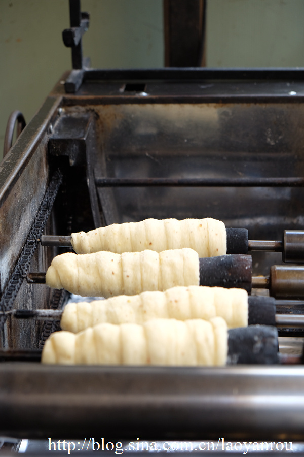
查理大桥是为了纪念神圣罗马帝国的查理四世而得名，桥体本身是一座有650多年历史的石拱桥，这座布拉格人在伏尔塔瓦尔河上兴建的第一座桥梁乍看上去并无过人之处，和大多欧洲老桥一样由灰黑色砂岩石头砌成，只是岁月在它身上留下了诸多沧桑的青苔痕迹。特殊之处是伫立在桥两头宏伟的巴洛克装饰的哥特式桥塔和沿着桥护栏一溜的排开的两列共30座大型精美巴洛克风格石雕，多是围绕着圣经故事为主题的圣徒或保护神的群雕，比如查理四世全身雕、耶稣之死组雕、圣约翰像等等。十七八世纪的巴洛克艺术家们殚精竭虑的创作赋予了这些栩栩如生的石头雕像以不朽的灵魂和艺术价值，游人不仅慨叹于巴洛克艺术的精美绝伦还纷纷用手触摸它们以获得传说中的好运和祝福，很多雕像的青铜部分都被人们磨得油光锃亮的了。令人吃惊的是，天才作家卡夫卡竟对每一尊雕像的典故都如数家珍，甚至说他的生命和灵感全部来自于伟大的查理大桥。真不愧被人们誉为“欧洲露天巴洛克雕像美术馆”的称号。 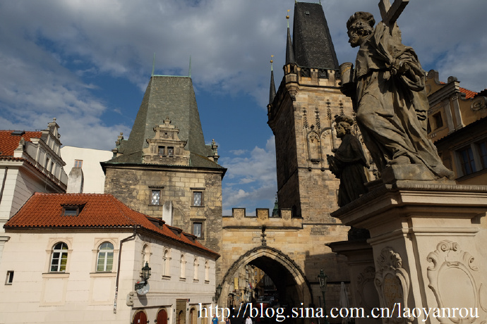 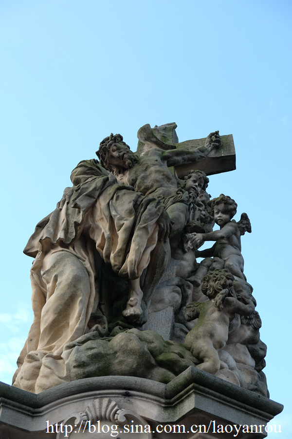 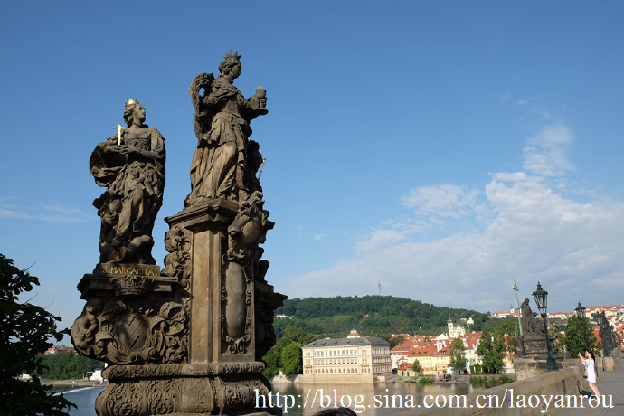 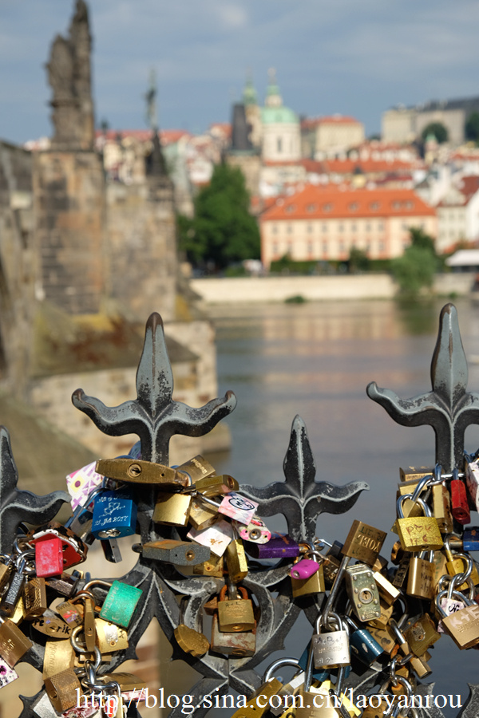
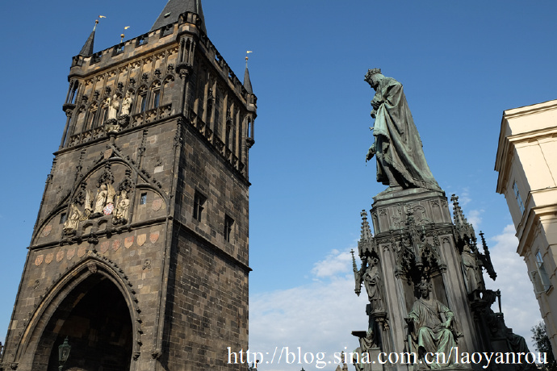
从查理大桥走到老城广场不到五分钟路程，天时尚早，街道上除了早起准备开市做生意的人们和零星几个游客基本空无一人，让我们可以从容自在地打量街道小巷边上各式各样五颜六色的古老建筑，有些装饰着巴洛克风格石雕，有的外墙画着文艺复兴风格的壁画，像天文钟旁边的那座曾为卡夫卡一家住所的一分钟之屋（one minute）的房子墙壁就是采用了刮画法产生了阴刻的立体画面效果让人啧啧称奇。老城广场的布拉格天文钟（也称为占星时钟）也是游客必看景点之一，这座建于1410年的中世纪自鸣天文钟历经六百多年风雨洗礼和毁坏重建、无数次维修、还增加了耶稣及十二门徒准点报时的精巧设计，尽管当时还在犹抱琵琶半遮面地进行又一次维修，仍无法掩饰其奇技淫巧的精密钟表机械工艺与捷克浪漫主义风格绘画的完美结合。广场周边老房子颇有些广州的骑楼风格，楼下的连廊除了打烊时间以外基本都被一间间的咖啡厅和餐馆的桌椅所占据，连廊顶部是典型的仿罗马风格的亮蓝或亮黄色“肋形穹隆”，线条错落交叠，前后呼应，一眼望过去颇具透视学的独特美感。
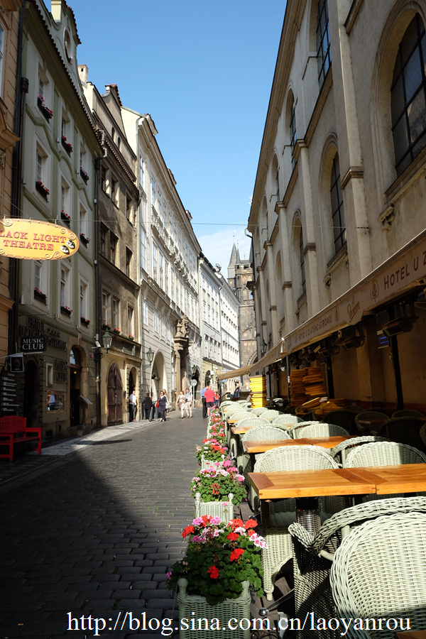
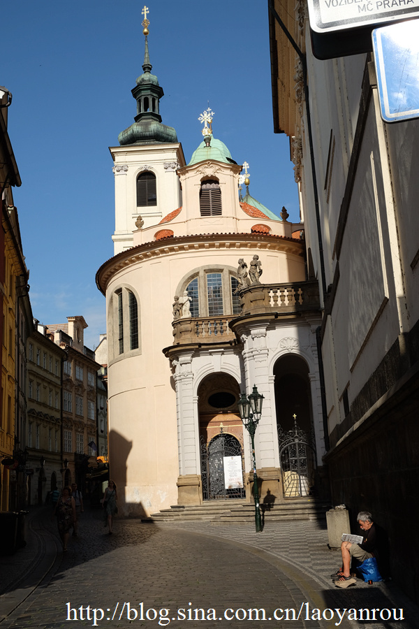
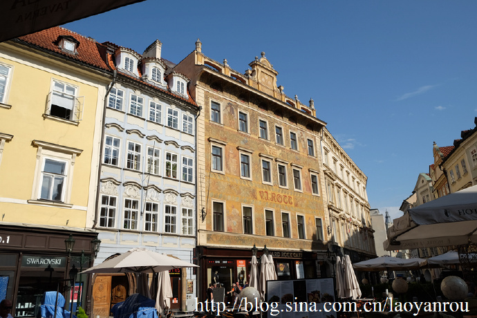
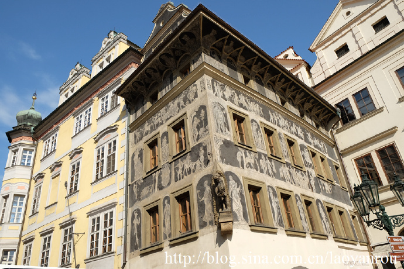
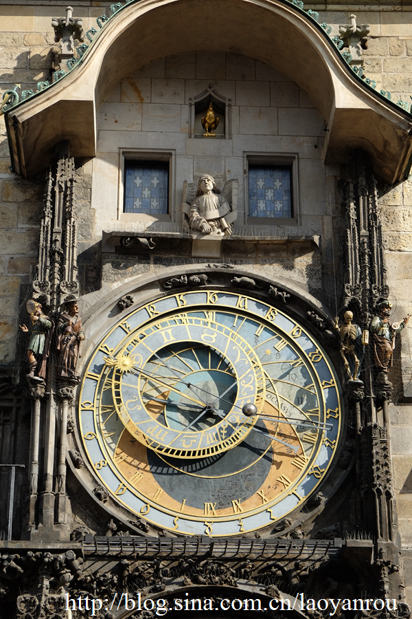
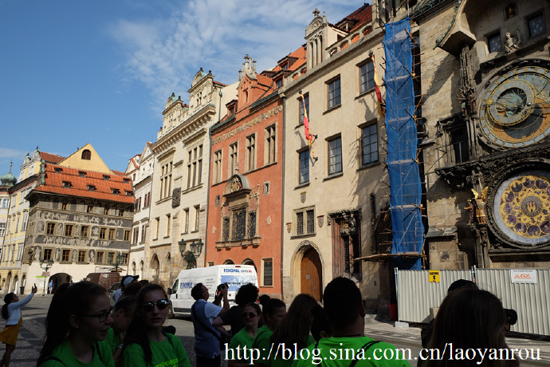
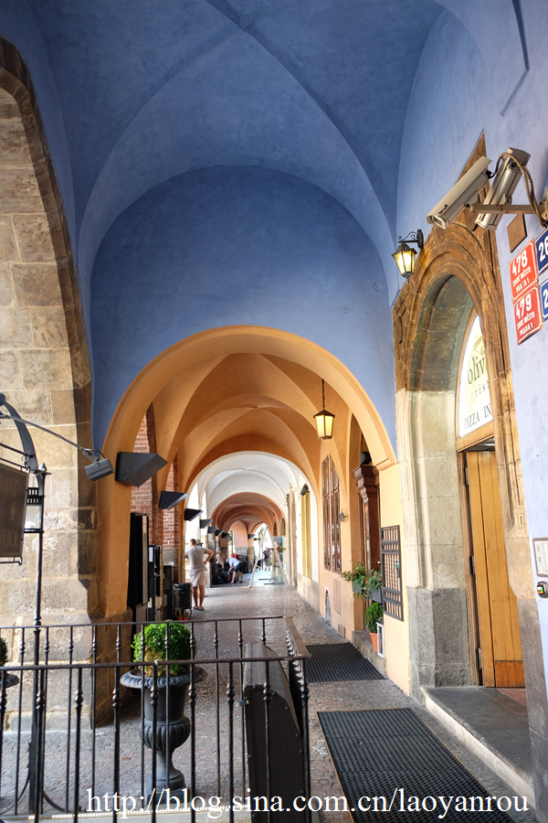
回公寓吃午饭休息的路上，逛了下老城广场附近的特拉维集市，这里既洋溢着卖蔬菜水果肉类的小摊贩热情吆喝，更多看到的是卖旅游工艺品的摊档在招揽游客，逛了一圈下来总体感觉还是水果比较经济实惠，蓝莓、车厘子、桑葚等基本比国内便宜了一半还多，而且看着新鲜吃起来也口颊留香，使得水果大餐成为我们此次捷克之旅的每天的保留节目之一。
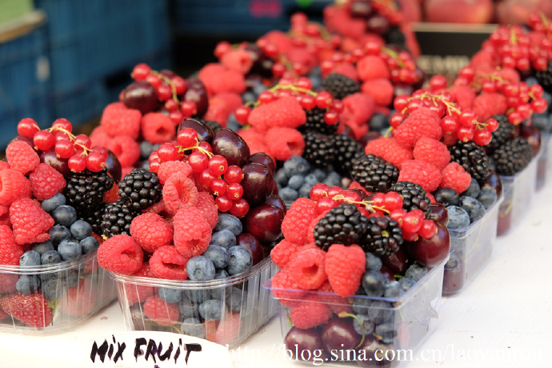
午休了一会走出公寓发现外面的天气有点阴沉，好在一路走到布拉格城堡都没有下雨。这座城堡是布拉格王子于公元九世纪开始修建的，历经波西米亚王朝各代皇帝甚至现今捷克总统的居住及修缮逐渐发展成为了糅合了古罗马、巴洛克、哥特及文艺复兴风格的世界级文化遗产。城堡的核心建筑圣维特教堂就是在典型的哥特式尖塔高墙的主体上逐渐增加了巴洛克雕刻装饰的集高耸严峻与华美瑰丽为一体的杰出混搭风建筑，更别说教堂入口左侧的布拉格著名画家穆哈绘制彩色玻璃窗还为其增添了20世纪现代主义的风采。其他类似的还有圣维特教堂里祭坛顶上残缺不全的罗马式拱顶壁画及圣乔治教堂仿罗马的赭红色外墙混搭了贝尼尼风格门柱。如此貌似毫不搭调的各时代流行建筑风格能在布拉格城堡合而不同其实应归功于古捷克即波西米亚王国的长期繁荣及稳定发展，正因为波西米亚王国长期皈依于史上最牛王朝之一的哈布斯堡王朝所主宰的神圣罗马帝国、奥匈帝国统治，所以大树底下好乘凉，成功避免了多次欧洲诸侯割据战乱纷争对其历史文化建筑的破坏，即便一战后奥匈帝国的衰落覆灭及第二次世界大战的欧洲混战都由于捷克善于见风使舵而化险为夷置身事外，故成功保留下来了各时代艺术风格建筑的精华并能如吸星大法一般融会贯通为一体。 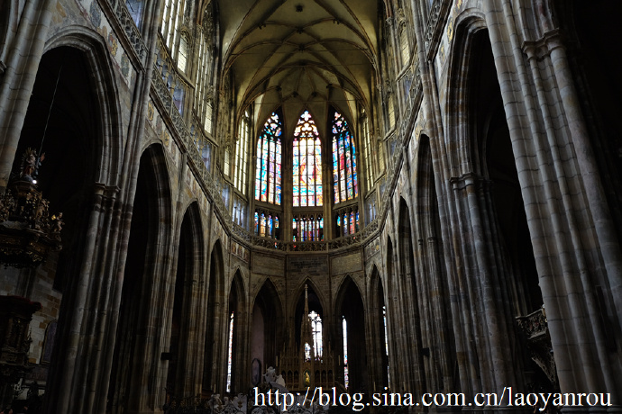 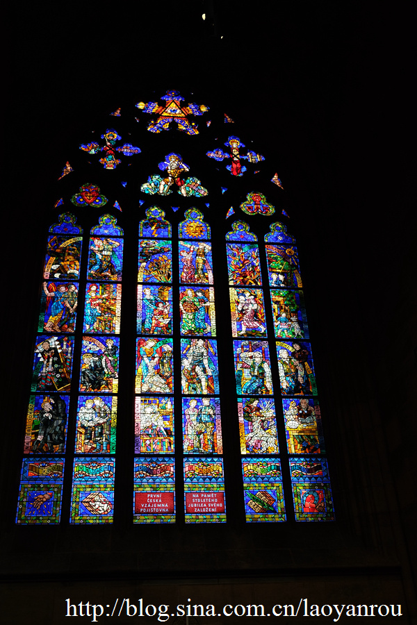 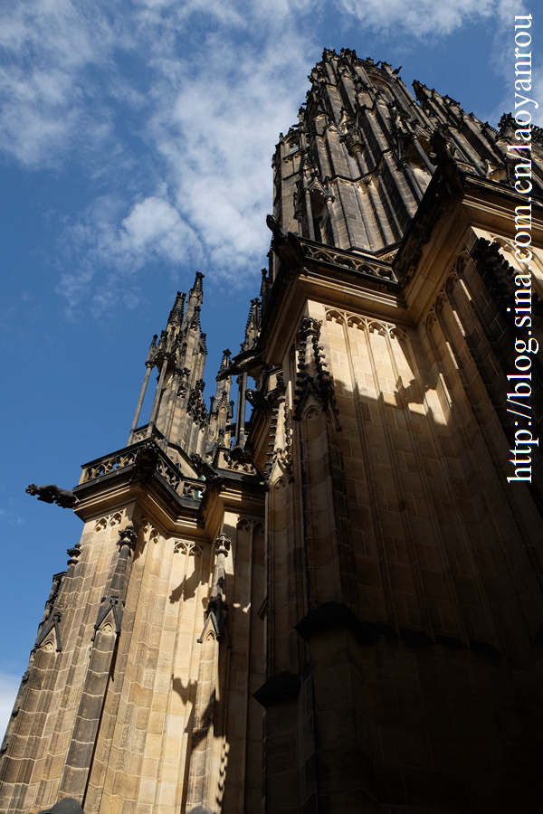 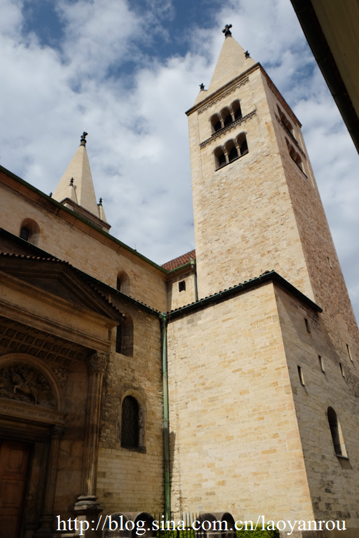 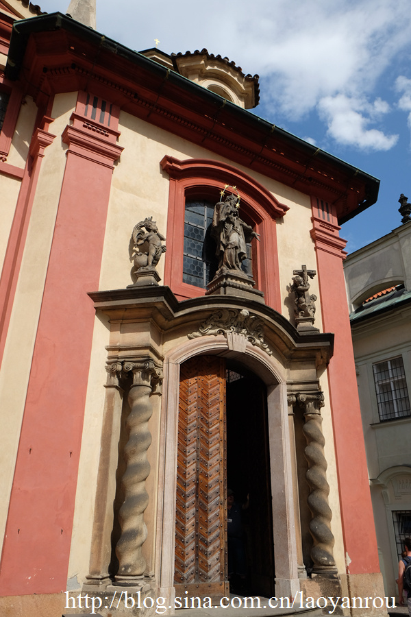 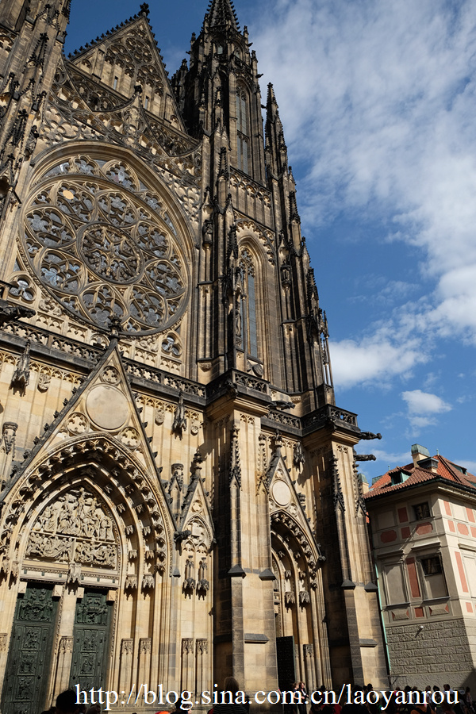 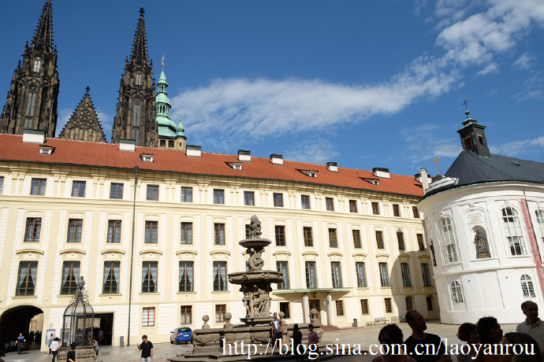
除了气势滂沱的中世纪哥特大教堂，布拉格城堡还有一处市井之地-黄金巷值得一看，毕竟也要雅俗共赏嘛！顾名思义黄金巷是因为国王大批炼金师曾聚居于此而得名，而这里最早曾是仆人和工匠居住之所，但最终沦为了贫民窟。后人将此地恢复成了中世纪布拉格市井风格的一间间小店铺，每间房子都仿照不同行业的家具摆设和装饰风格进行了精心布置，麻雀虽小五脏俱全，足以让游人一窥当时的布拉格平民百姓的日常起居生活。值得一提的是，黄金巷里的第22号房子曾是卡夫卡的住所，现在变成了一间小巧的书店。而巷子里其他店铺各自售卖不同种类的纪念品和手工艺品，甚至在二楼还有出售仿古刀剑盔甲之类的武器装备，引得AMY驻足流连目不转睛直到被我们呵斥了了好一顿才嘟嘟囔囔地跟随我们离开。因为巷子不宽、房间很小稍微停留一下就会被后面潮水般的游客拥簇向前，使得我们不得不早点从黄金巷挤了出来，此巷或许是我们此行所经历过的最拥挤的景点吧！ 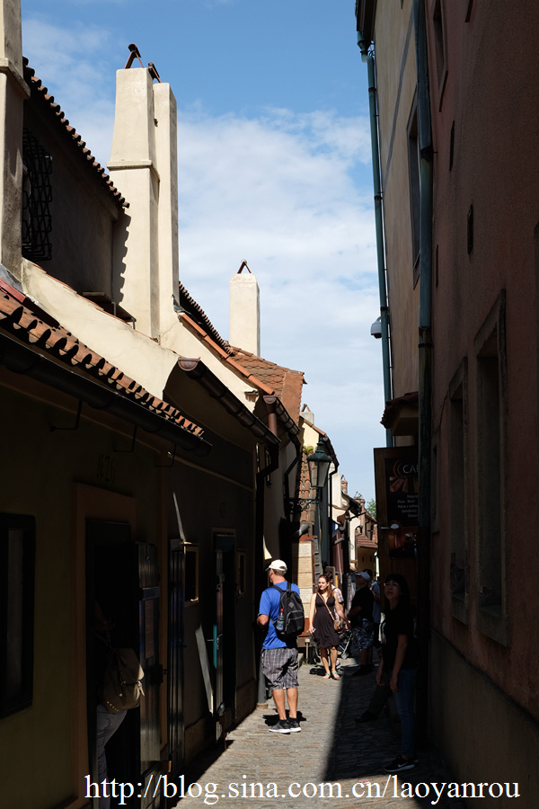 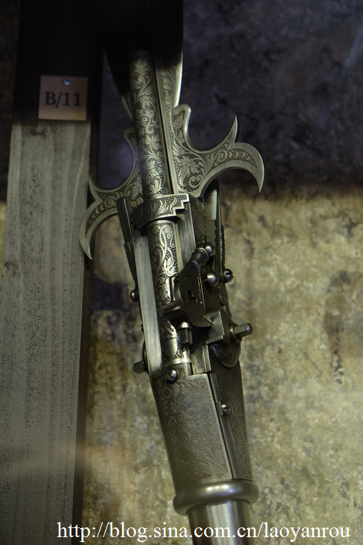
从布拉格城堡可居高临下地俯瞰整个布拉格旧城，清一色的赭红色的屋顶一望无际延绵向前，间中浮现出几个地标性建筑如大教堂和火药塔青灰色尖顶和布拉格歌剧院，几乎在极目远眺的最远方才能看到几栋现代化的建筑，可见布拉格几乎将整个城市所有古老建筑都尽可能原封不动地原地保留了下来，却把所有现代化的痕迹都驱逐到几乎无法影响到古城观感的距离以外。确实是对得起老祖宗留下来宝贵的物质文化遗产！ 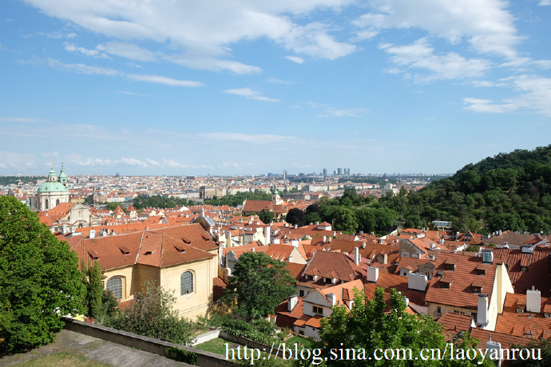
但令人称奇的是，尽管布拉格人民如此地珍惜爱护古老文化，但却丝毫不影响他们对现代艺术的包容，两种心境竟然在布拉格城堡下的列侬墙处得到了完美统一。还没等我们来到此地远远地已经看见墙边的人头涌涌，有在墙上现场涂鸦的，有依墙弹吉他的，有照相留念的，有驻足欣赏若有所思的，更多的是我们这种想凑热闹都挤不进去的普通游客。其实说白了列侬墙就是一面给各类艺术家们尤其是街头艺术家们宣泄自我的普通水泥墙，在貌似不经意的涂鸦中还隐藏着一些颇具艺术意味的画面和字句，比如我最欣赏的一句话是“Do not lie to yourself”-欺人勿欺己，道出了多少人生感悟啊！或许这里正是布拉格人在坐拥一座古老世界文化遗产城市的同时，保留着一块对现代文明和嘻哈文化的理解和诠释之地吧！ 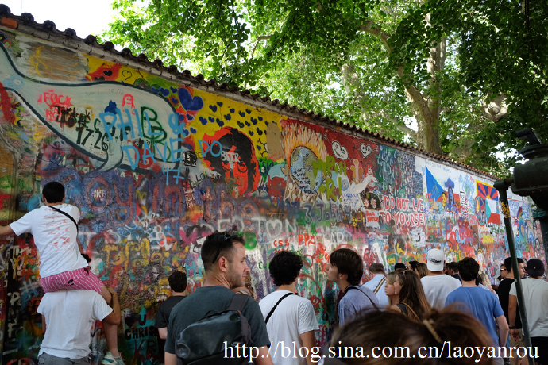 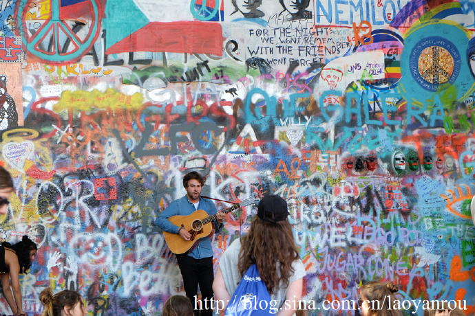
布拉格首日接近了尾声，黄昏的伏尔塔瓦尔河静谧悠远，河上偶尔掠过的皮划艇和小船泛起了涟涟清漪，我们兴奋的小心情也如同河边漫步的人们般渐渐平复了下来，网上找了间推荐的捷克菜餐厅小奢侈一把，带着浓浓的满足和一阵阵袭来的困意度过了一晚。 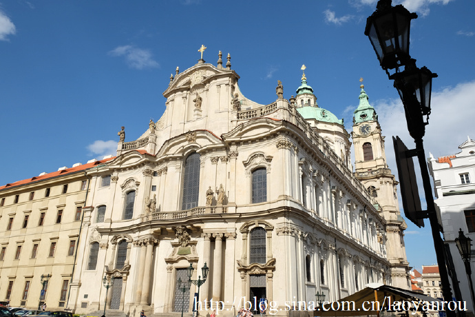 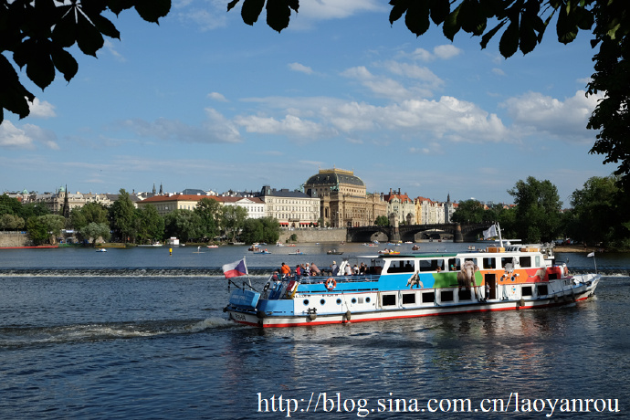 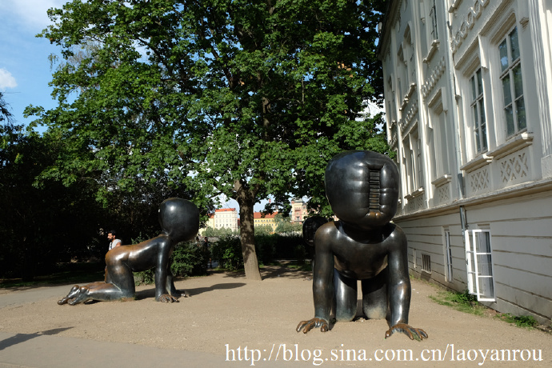 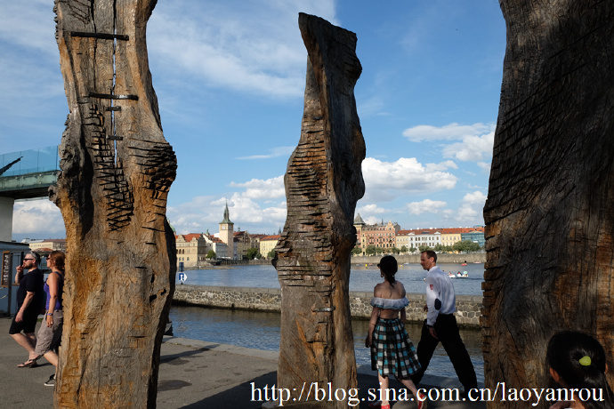 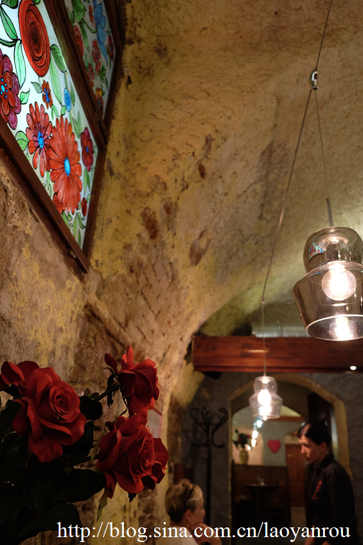 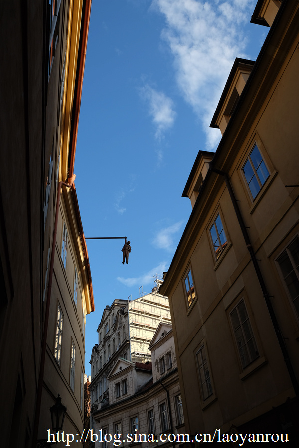